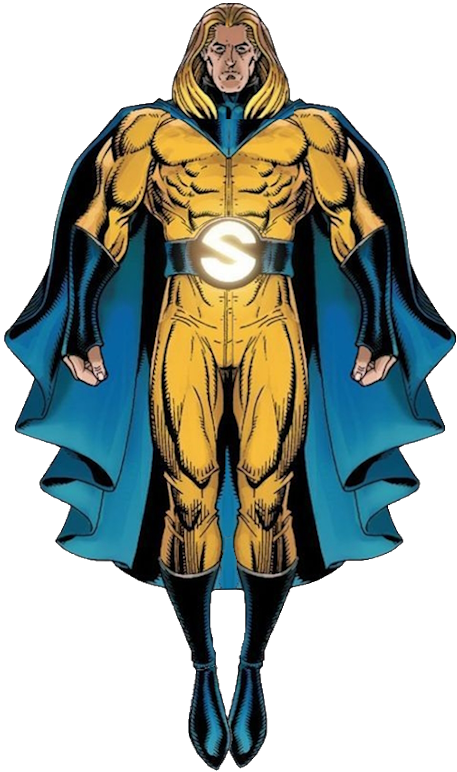

Temporal consistency
Representative qualitative behavior under difficult frame-to-frame changes.

We revisit the memory update mechanism in SAM2-based visual object tracking and identify confidence-only mask selection as the dominant cause of drift under occlusion, rapid motion, and distractors. We introduce SENTRY, a training-free, plug-and-play, refine-before-write module that validates each memory update for short-horizon temporal consistency before committing it. SENTRY aggregates diverse segmentation hypotheses per frame and backtracks each candidate to form short, temporally coherent tracklets. A neighbor-aware, cycle-consistent matching stage evaluates candidates against recent trajectories to favor temporally and geometrically consistent hypotheses. SENTRY requires no retraining and leaves the base architecture untouched; it simply replaces confidence-driven writes with consistency-validated ones. To ensure fair and comprehensive evaluation, we re-evaluate major open-source SAM2-based trackers across all available scales and datasets, filling gaps where prior works reported incomplete results. Integrated into five strong baselines, SENTRY delivers consistent gains across nine benchmarks, achieving new zero-shot SOTA on LaSOT, LaSOText, GOT-10k, VOT20, VOT22, and DiDi. It also yields strong improvements elsewhere, even when all baselines are re-evaluated across all model scales. Despite its checks, SENTRY remains real-time, running at 32.8 FPS, introducing approximately 25% overhead relative to SAM2. Our results provide the first unified, all-scale evaluation of SAM2-based trackers and demonstrate that enforcing temporal validity at write time is a general design principle that consistently stabilizes memory-augmented tracking without retraining.
SENTRY architecture. The module replaces confidence-driven memory writes with consistency-validated updates. Diverse segmentation hypotheses are refined, backtracked into short-horizon tracklets, and compared against recent neighbors through cycle-consistent matching before a memory update is committed.
SENTRY validates candidate masks before they enter memory, replacing confidence-only updates with temporal checks that reduce drift under occlusion and distractors.
Each candidate is backtracked to form a short, coherent trajectory, giving the memory update a local temporal history rather than a single-frame score.
Recent trajectories act as consistency anchors, favoring masks that preserve identity and geometry across neighboring frames.
Suppresses distractors and drift before unstable masks are written into memory.
Uses cycle-consistent checks to keep object identity stable across challenging sequences.
Works with memory-based trackers without retraining or changing the base architecture.
Maintains 32.8 FPS while improving robustness on long, cluttered, occluded videos.
SENTRY is evaluated across all available scales and datasets, including the main visual object tracking benchmarks and VOT challenge suites. Use the carousel to inspect the complete result figures.
Overall results
1 of 4
Representative qualitative behavior under difficult frame-to-frame changes.
Examples showing why neighbor-aware validation matters before committing memory.
SENTRY keeps memory updates conservative without removing real-time tracking behavior.
| Category | Method | LaSOT | LaSOText | TNL2K | GOT-10k | TrackingNet | ||||||||||
|---|---|---|---|---|---|---|---|---|---|---|---|---|---|---|---|---|
| S | NP | P | S | NP | P | S | NP | P | AO | SR0.50 | SR0.75 | S | NP | P | ||
| Vision-Based | DiffusionTrack | 70.8 | 79.8 | 76.7 | – | – | – | 56.4 | 72.5 | 57.3 | 74.8 | 85.4 | 72.0 | 83.8 | 88.2 | 82.1 |
| HIPTrack | 72.7 | 82.9 | 79.5 | 53.0 | 64.3 | 60.6 | – | – | – | 77.4 | 88.0 | 74.5 | 84.5 | 89.1 | 83.8 | |
| AQATrack256 | 71.4 | 81.9 | 78.6 | 51.2 | 62.2 | 58.9 | 57.8 | 59.4 | – | 73.8 | 83.2 | 72.1 | 83.8 | 88.6 | 83.1 | |
| ARPTrack256 | 72.6 | 81.4 | 78.5 | 52.0 | 62.9 | 58.7 | – | – | – | 77.7 | 87.3 | 74.3 | 85.5 | 90.0 | 85.3 | |
| SPMTrack-B | 74.9 3rd | 84.0 | 81.7 | – | – | – | 62.0 | 79.7 | 66.7 | 76.5 | 85.9 | 76.3 | 86.1 Best | 90.2 | 85.6 | |
| VLM | UVLTrack-B | 69.4 | – | 74.9 | 49.2 | – | 55.8 | 62.7 | – | 65.4 | – | – | – | 83.4 | – | 82.1 |
| QueryNLT | 59.9 | 69.6 | 63.5 | – | – | – | 57.8 | 75.6 | 58.7 | – | – | – | – | – | – | |
| DUTrack384 | 74.1 | 84.9 | 82.9 | 52.5 | 63.6 | 60.5 | 65.6 2nd | 83.2 | 71.9 | 77.8 | – | – | – | – | – | |
| MambaVLT | 66.6 | 77.3 | 71.0 | – | – | – | 66.5 Best | 90.9 | 69.9 | – | – | – | – | – | – | |
| CLDTracker | 74.0 | 83.9 | 81.1 | 53.1 | 64.8 | 60.6 | 61.5 | 82.2 | 64.3 | 77.5 | 85.4 | 75.6 | 85.1 | 89.7 | 84.9 | |
| Memory-Based | MemVLT | 72.9 | 85.7 | 80.5 | 52.1 | 63.3 | 59.8 | 63.3 3rd | 80.9 | 67.4 | – | – | – | – | – | – |
| RTracker-L | 74.7 | 84.5 | – | 54.9 | 65.5 | 62.7 | 60.6 | – | 63.7 | 77.9 | 87.0 | 76.9 | – | – | – | |
| Zero-shot Method | ||||||||||||||||
| SAM2-L | 68.5 | 76.1 | 73.6 | 56.8 | 71.1 | 67.0 | 56.7 | 75.4 | 62.5 | 80.8 | 91.3 | 75.5 | 85.3 | 91.3 | 88.2 | |
| SAMURAI-L | 74.2 | 82.7 | 80.2 | 61.0 3rd | 73.9 | 72.2 | 50.6 | 67.5 | 54.2 | 81.7 3rd | 92.2 | 76.9 | 85.3 | 88.2 | 85.0 | |
| DAM4SAM-L | 75.1 2nd | 83.3 | 81.1 | 60.9 | 75.3 | 72.2 | 59.8 | 79.8 | 66.8 | 81.1 | 91.4 | 77.2 | 85.3 | 90.9 | 87.4 | |
| SENTRY-S2-L Ours | 70.2 (+1.7) | 77.2 (+1.1) | 74.5 (+0.9) | 57.0 (+0.2) | 71.7 (+0.6) | 67.1 (+0.1) | 57.9 (+1.2) | 76.9 (+1.5) | 64.1 (+1.6) | 81.1 (+0.3) | 91.4 (+0.1) | 76.5 (+1.0) | 85.7 (+0.4) | 91.9 (+0.6) | 88.9 (+0.7) | |
| SENTRY-SR-L Ours | 75.1 (+0.9) 2nd | 82.7 | 80.4 (+0.2) | 61.5 (+0.5) 2nd | 75.0 (+1.1) | 72.9 (+0.7) | 59.6 (+9.0) | 78.8 (+11.3) | 66.4 (+12.2) | 81.8 (+0.1) 2nd | 92.3 (+0.1) | 77.1 (+0.2) | 85.8 (+0.5) 3rd | 91.1 (+2.9) | 88.1 (+3.1) | |
| SENTRY-D4S-L Ours | 76.3 (+1.2) Best | 84.7 (+1.4) | 82.4 (+1.3) | 61.8 (+0.9) Best | 76.6 (+1.3) | 73.8 (+1.6) | 61.3 (+0.5) | 81.3 (+1.5) | 68.3 (+1.5) | 82.1 (+1.0) Best | 92.6 (+1.2) | 78.2 (+1.0) | 85.9 (+0.6) 2nd | 91.5 (+0.6) | 87.9 (+0.5) | |
@inproceedings{alansari2026sentry,
title={SENTRY: SAM2-Enhanced Neighbor-Aware and Temporally Reasoned Memory for Visual Tracking},
author={Alansari, Mohamad and Michael, Yonathan and AlMarzouqi, Hasan and Naseer, Muzammal and Javed, Sajid and Werghi, Naoufel},
booktitle={Proceedings of the European Conference on Computer Vision (ECCV)},
year={2026}
}
For inquiries, reach out at 100061914@ku.ac.ae .